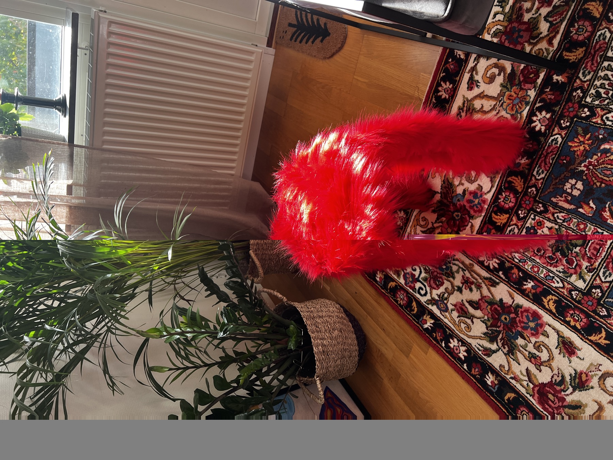

01
FURNITURE REDESIGN
Two IKEA stool variations
I bought two simple, inexpensive stools and redesigned each one differently. One was fully covered in bright red faux fur. The other was painted lilac and finished with a handmade textured cover in white and purple.
